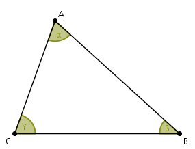

Acutangulo
Un triángulo acutángulo es un triángulo donde todos sus tres ángulos interiores son agudos, es decir, miden menos de 90 grados.
Características de un triángulo acutangulo
- Ángulos agudos: Cada ángulo del triángulo es menor que 90 grados.
- Suma de ángulos: La suma de los tres ángulos interiores siempre es igual a 180 grados.
- Clasificación: Se clasifica como un tipo de triángulo según la medida de sus ángulos, junto con los triángulos rectángulos (con un ángulo de 90 grados) y obtusángulos (con un ángulo mayor a 90 grados).
